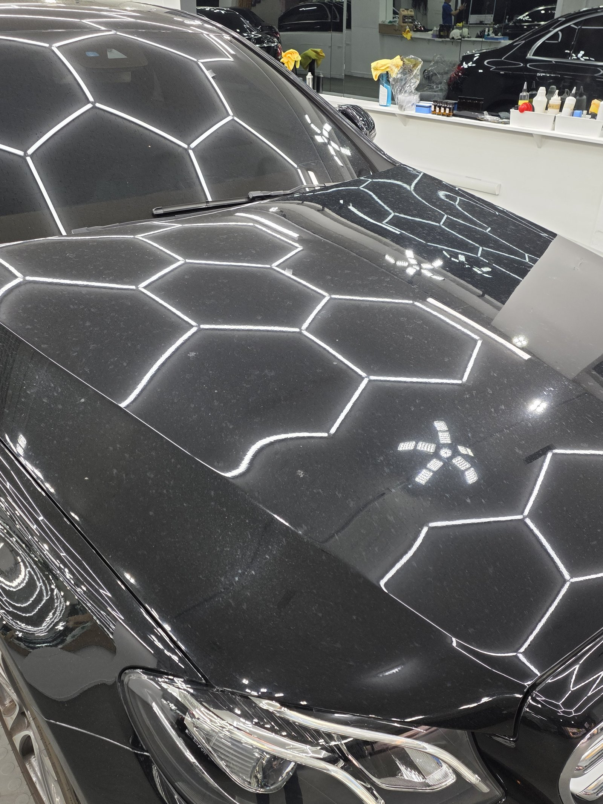
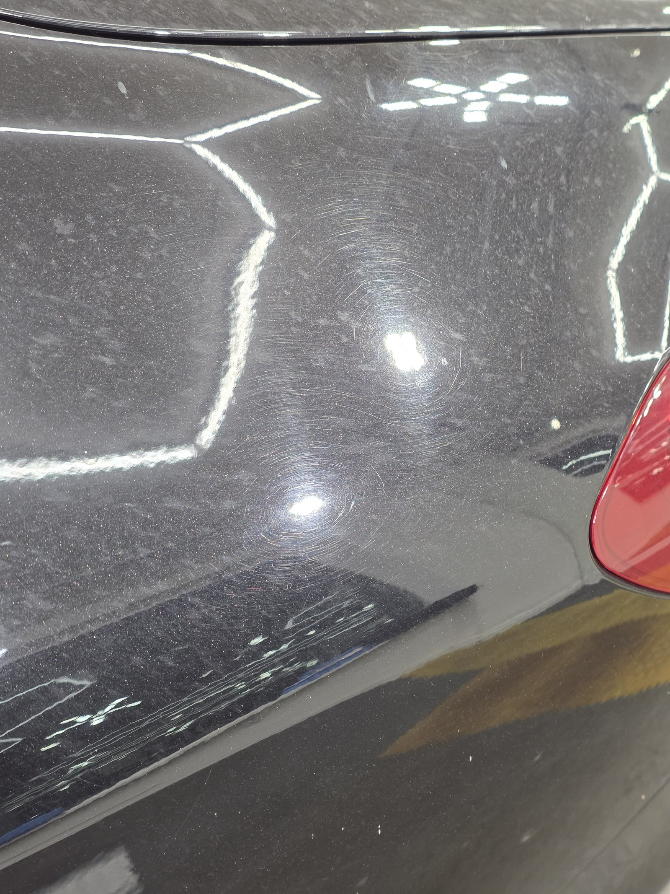
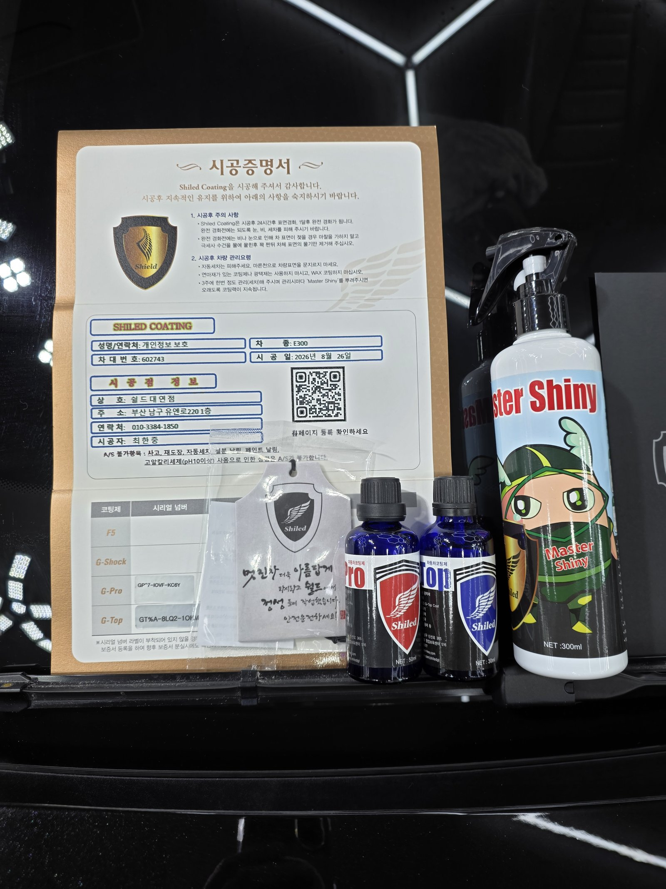
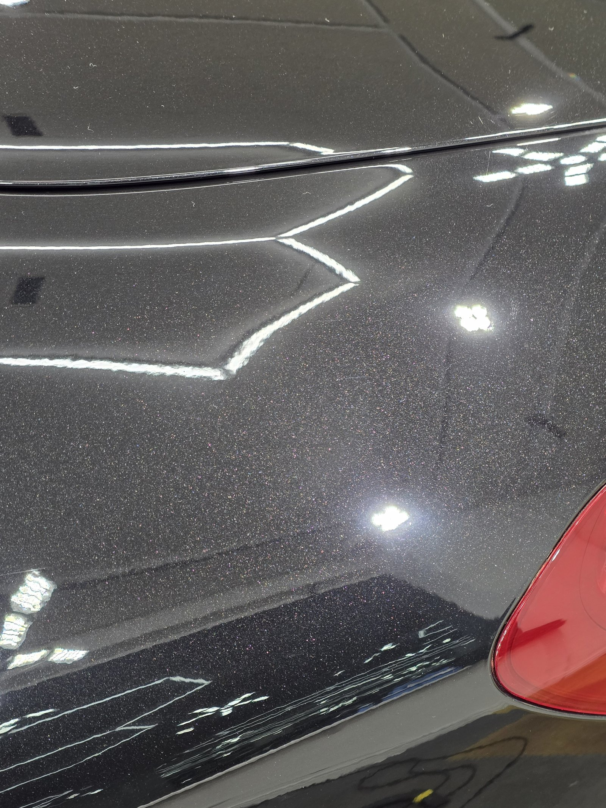
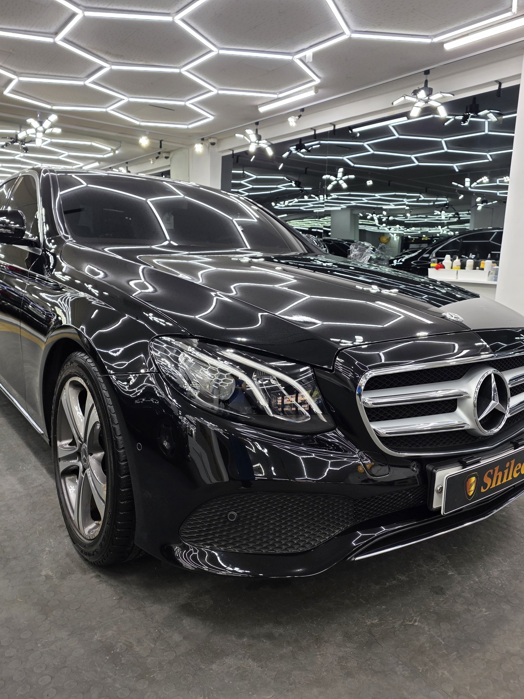
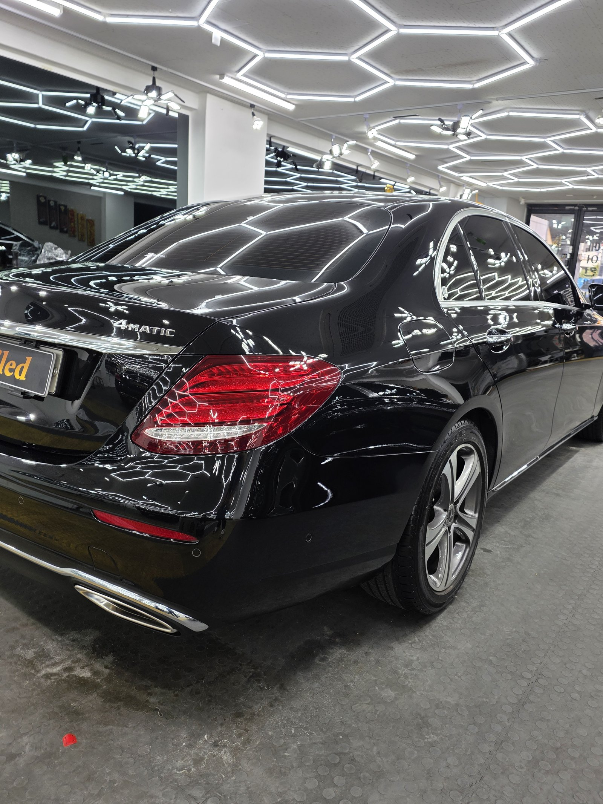

부산 광택 쉴드광택에 벤츠 E300 검정이 들어왔습니다.
세차는 꾸준히 다니신 차였습니다. 그런데 매장 헥사 조명 아래 세워보니 이야기가 달랐습니다.

본넷 가득한 스월, 트렁크의 가는 기스
본넷 위 헥사 라인이 일직선으로 이어지지 않고 사방으로 흩어져 보였습니다. 원형으로 겹겹이 도는 스월(홀로그램)이 표면 전체에 깔려 있었기 때문입니다.
뒤쪽 펜더와 트렁크 라인, 테일램프 주변에는 가는 실선 기스가 여러 방향으로 겹쳐 있었습니다. 자동세차나 마른 걸레질이 오래 쌓이면 흔히 생기는 패턴입니다.
기술자의 팁
검정 차의 스월은 흐린 날이나 실내 조명에서는 잘 안 보입니다. 헥사 조명처럼 격자 패턴이 있는 조명 아래에 세워야 라인이 끊기고 휘어지는 지점으로 스월과 기스가 정확히 드러납니다.

뒤펜더와 트렁크 라인에 원형 스월과 실선 기스가 겹쳐 있었습니다
부산 광택으로 걷어내고, 듀얼코팅으로 마감까지
부산 남구 유엔로 매장에서 디테일링 세차로 표면 오염을 먼저 걷어내고, 철분 제거제로 박힌 쇳가루를 녹여낸 뒤 탈지까지 마쳤습니다. 이 과정을 생략하면 광택 단계에서 이물질이 오히려 새 기스를 만듭니다.
이후 폴리셔로 구간을 나눠 버핑하며 스월과 잔기스를 단계별로 걷어냈습니다. 표면이 정리된 뒤에는 G-PRO로 하도를 잡고 G-TOP으로 마감하는 듀얼코팅을 올렸습니다. 경도가 높은 G-PRO가 스크래치 내성을 잡고, G-TOP이 발수·광택을 더하는 조합입니다.

시공증명서에 G-PRO·G-TOP 코팅 시리얼 넘버와 전용 관리제를 함께 남겨 드립니다
같은 자리에서 비교한 결과
앞서 스월이 겹쳐 있던 뒤펜더·트렁크 라인, 같은 구도에서 다시 찍었습니다. 어지럽게 흩어지던 반사가 걷히고, 헥사 라인이 끊김 없이 매끈하게 흐릅니다.

같은 구도, 광택+듀얼코팅 이후 반사


시공 후, 이렇게 관리하세요
완전 경화 전(약 하루)에는 비·눈·세차를 피해 주십시오. 자동세차(기계세차)는 브러시가 새 잔기스를 만드니 피하시는 게 좋습니다. 3주에 한 번 관리 세차 때 전용 관리제 '마스터샤이니'를 뿌려주시면 코팅력이 오래 유지됩니다.
시공 단가표 이 시공 가격 보기 → 차급별 금액을 전부 공개해 두었습니다. 차종을 고르면 예상 금액이 바로 나옵니다.스월과 기스는 세차로 지워지지 않습니다.
제품을 직접 만드는 사람이 직접 광택 작업까지 합니다.
부산 광택이 필요하시면 편하게 연락 주십시오.
어떤 차를 타냐보다 어떻게 타냐가 중요합니다~!
시공 중에는 전화를 받지 못할 때가 많습니다.
카카오톡으로 차종과 원하시는 시공을 남겨주시면 확인 후 답변드립니다.
쉴드광택 · 부산 남구 유엔로220 1F · 대표 최한중